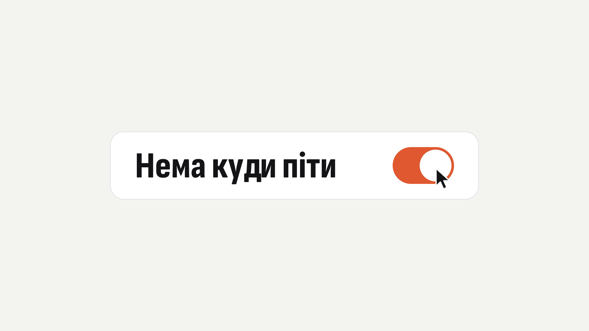
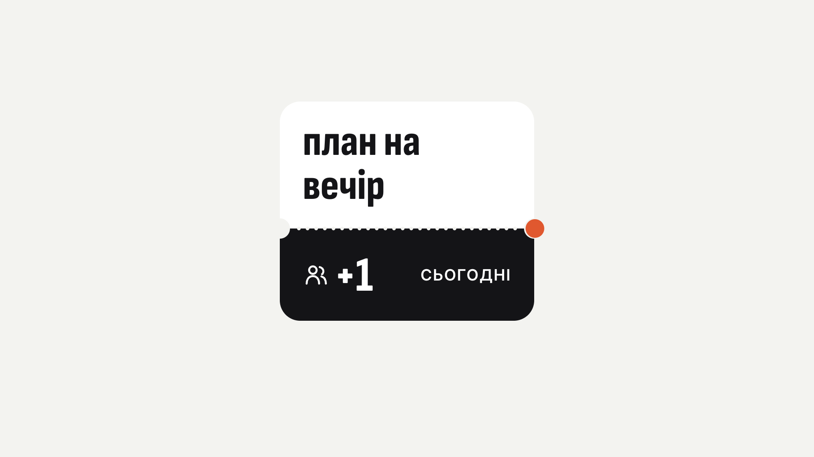
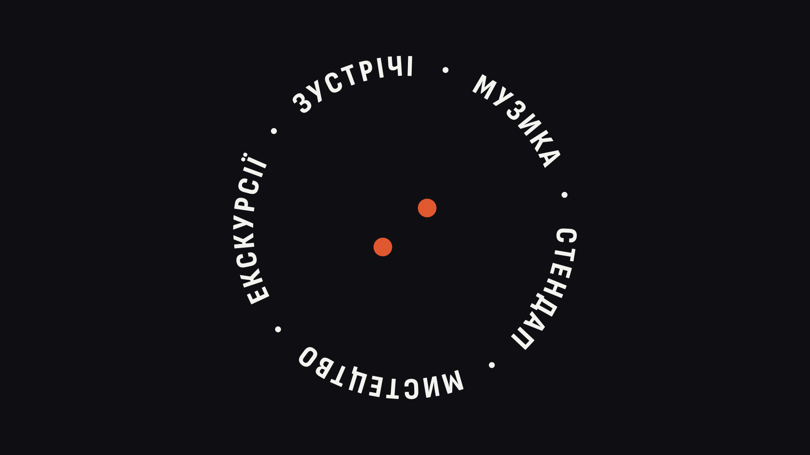
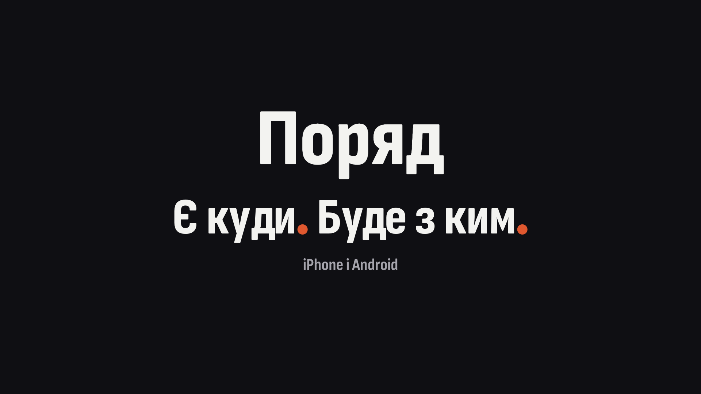

1920×1080, 60 fps, 16.36 с = 24 біти по 0.682 с (88 BPM, Cozy Cafe Chillhop з 10.245 с). Петля: останній кадр = перший.

Курсор їде до помаранчевого тумблера «Нема куди піти». На b1 клік: помаранчевий стягується в крапку, крапка сідає на «і», решта літер падає, «піти» стає героєм.

Знизу вспливає квиток «Корінця», крапка падає в лівий виріз і біжить по перфорації тією ж пружиною: проскакує за край на b6, сідає в правий виріз. За нею пробиваються дірочки й заливається корінець; на b7 друкується «план на вечір», гліф людей «+1 · СЬОГОДНІ»: місце ще для однієї людини.

Після сцени форми (коло → квадрат → пігулка → крапка на чорному) крапка ділиться на дві — це «+1». Пара кружляє одна навколо одної, навколо неї орбіта категорій («куди»); на кожен біт крок. Літери розлітаються в растр, де хвилі від двох крапок перетинаються.

Растр росте за краї кадру й перевертається в чорне. Дві крапки сідають як дві крапки слогана: твоя після «Є куди», «+1» після «Буде з ким». У поверненні вони зливаються в одну й іде крізь квиток у тумблер.
| Біт | Час, с | Що відбувається |
|---|---|---|
| b0 | 0.00 | Тумблер увімкнений, курсор під'їжджає (продовження руху з кінця петлі) |
| b1 ● | 0.68 | Клік. Повзунок пружно вліво, помаранчевий стягується в крапку |
| b2 | 1.36 | Крапка сідає на «і». «Нема куди» гнуться й падають |
| b3 ● | 2.05 | «піти» в центрі, героєм, з перельотом пружини |
| b4 | 2.73 | Крапка відштовхується, літери «піти» падають |
| b5 ● | 3.41 | Крапка в лівому вирізі квитка, старт пружини по перфорації |
| b6 | 4.09 | Переліт за правий виріз (~17%) |
| b7 ● | 4.77 | Друк: «план на вечір», на корінці гліф людей «+1 · СЬОГОДНІ»; крапка сідає у виріз до b7.5 |
| b8 | 5.45 | Крапка мчить по перфорації до центру |
| b9 ● | 6.14 | Коло росте за всі чотири кути: кадр помаранчевий |
| b10 | 6.82 | Чорний заокруглений квадрат обертається всередині |
| b11 ● | 7.50 | Квадрат тягнеться в пігулку |
| b12 | 8.18 | Усе стискається в крапку на чорному — і вона ділиться на дві («+1») |
| b13 ● | 8.86 | Літери категорій вилітають на орбіту навколо пари |
| b14–b15 | 9.55–10.23 | Пара й орбіта роблять крок на кожен біт, з перельотом |
| b16 | 10.91 | Літери розлітаються назовні, з'являється растр |
| b17 ● | 11.59 | Растр: хвилі від двох крапок перетинаються, поле росте |
| b18 | 12.27 | Растр за краями кадру, переворот у чорне |
| b19 ● | 12.95 | «Поряд», слоган: твоя крапка — після «Є куди», за мить «+1» — після «Буде з ким»; потім «iPhone і Android» |
| b20–b21 | 13.64–14.32 | Енд-карта тримається (~2 с читання) |
| b22 | 15.00 | Повернення: дві крапки крізь растр зливаються в одну… |
| b22.7 | 15.45 | …назад по перфорації, корінець знебарвлюється… |
| b23.3 | 15.91 | …у тумблер: розливається в доріжку, курсор під'їжджає |
| b24 = b0 | 16.36 | Шов петлі |
● — сильна доля (удар). Звуки: клік, «поп» на приземленнях, свист на пострілі.